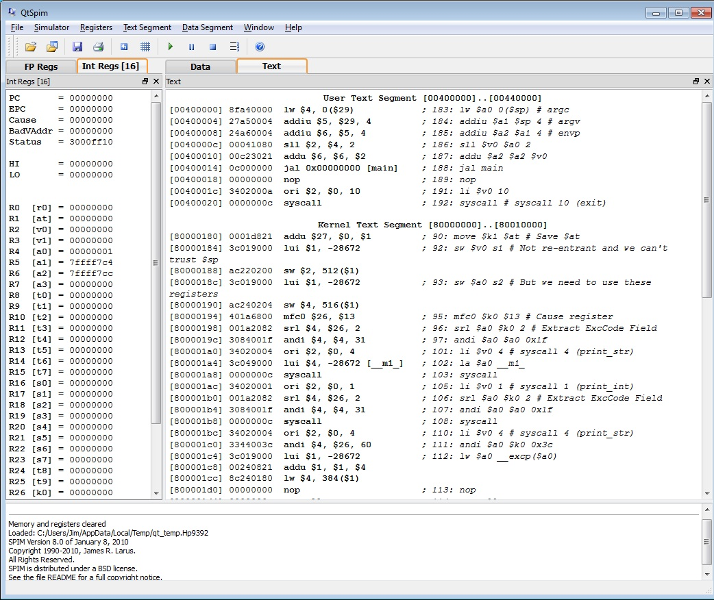
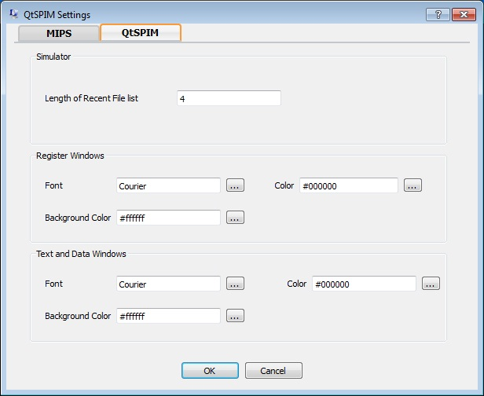
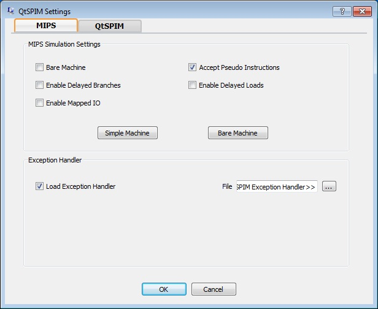

QtSpim is a self-contained simulator that will run a MIPS32 assembly program and display the processor's registers and memory.
QtSpim reads and executes programs written in assembly language for a MIPS computer. QtSpim does not execute binary (compiled) programs. To simplify programming, QtSpim provides a simple debugger and small set of operating system services.
QtSpim implements most of the MIPS32 assembler-extended instruction set. (It omits the floating point comparisons and rounding modes and the memory system page tables.) The MIPS architecture has several variants that differ in various ways (e.g., the MIPS64 architecture supports 64-bit integers and addresses), which means that QtSpim will not run programs for all MIPS processors.
When QtSpim starts up, it opens a window containing that looks like the one below. (The features in the window look slightly different on Microsoft Windows than on Linux or Mac OSX, but all the menus and buttons are in the same place and work the same way).

QtSpim's main window has three parts:
QtSpim also opens another window called Console that displays output from your program.
Your program should be stored in a file. Assembly code files usually have the extension ".s", as in file1.s. To load a file, go to the File menu and select Load File. The screen will change as the file is loaded, to show the instructions and data in your program.
Another very useful command on the File men is Reinitialize and Load File. It first clears all changes made by a program, including deleting all of its instructions, and then reloads the last file. This command works well when debugging a program, as you can change your program and quickly test it in a fresh computer without closing and restarting QtSpim.
To start a program running after you have loaded it, go to the Simulator menu and click Run/Continue. Your program will run until it finishes or until an error occurs. Either way, you will see the changes that your program made to the MIPS registers and memory, and the output your program writes will appear in the Console window.
If your program does not work correctly, there are several things you can do. The easiest is to single step between instructions, which lets you see the changes each instructions makes, one at a time. This command is also on the Simulator menu and is named Single Step.
Sometimes, however, you need to run your program for a while before something goes wrong, and single stepping would be too slow. QtSpim lets you set a breakpoint at a specific instruction, which stops QtSpim before the instruction executes. So, if you think your problem is in a specific function in your program, set a breakpoint at the first instruction in the function, and QtSpim will stop everytime the function is invoked.
You set a breakpoint by right-clicking on the instruction where you want to stop, and selecting Set Breakpoint. When you are done with the breakpoint, you can remove it by selecting Clear Breakpoint instead.
If you want to stop your program while it is running, go to the Simulator menu and click Pause. This command stops your program, let you look around, and continue execution if you want. If you do not want to continue running, click Stop instead.
When QtSpim stops, either because of an error in your program, a breakpoint, after clicking Pause, or after single stepping, you can continue the program running by clicking on Run/Continue (or you can continue single stepping by clicking Single Step). If you click Stop, instead of Pause, then clicking Run/Continue will restart your program from the beginning, instead of continuing from where it stopped. (This is roughly the same way that a music player operates; you can pause and restart a song, but if you stop the music, you need to start playing at the beginning.)
The three other menus -- Registers, Text Segment, and Data Segment -- control QtSpim's displays. For example, the Register menu controls the way QtSpim displays the contents of registers, either in binary, base 8 (octal), base 10 (decimal), or base 16 (hexadecimal). It is often quite convenient to flip between these representations to understand your data.
These menus also let you turn off the display of various parts of the machine, which can help reduce clutter on the screen and let you concentrate on the parts of the program or data that really matter.
You can change the contents of either a register or memory location by right-clicking on it and selecting Change Register Contents or Change Memory Contents, respectively.
The Simulator menu contains the Settings command, which brings up a dialog like this:

The dialog has two tabs. The first, shown above, changes the visual aspects of QtSpim, such as the fonts. The second looks like this:

It changes the way that QtSpim operates:
The button marked Simple Machine enables the most common options (Accept Pseudo Instructions) that are what most people use. The button marked Bare Machine turns on the instructions corresponding to a real MIPS processor (Bare Machine, Delayed Branches, Delayed Loads).